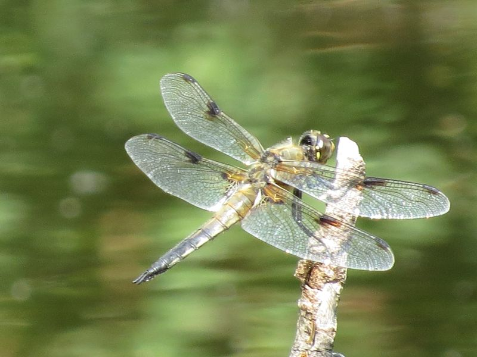

Vierfleck
Libellula quadrimaculata
Wer diese Segellibelle am Lehrpfad sucht, hat am schnellsten Erfolg bei der Hochmoor-Station Eulenbruck. Der kleine Tümpel vor der Plattform ist ein beliebter Tummelplatz. Hier wird von Mitte Mai bis in den August gejagt, gebalzt und Hochzeit gefeiert. Von Ansitzwarten aus starten die temperamentvollen Tiere um Beute zu erhaschen.